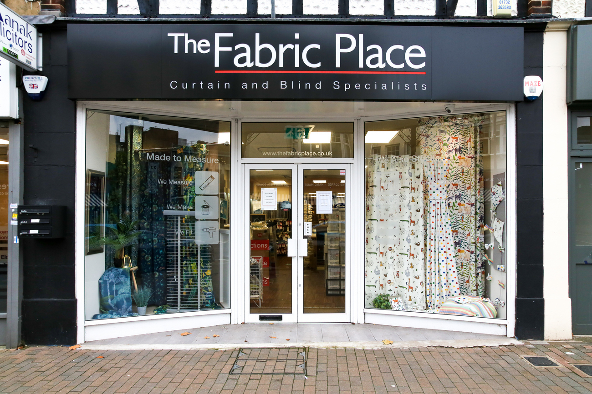
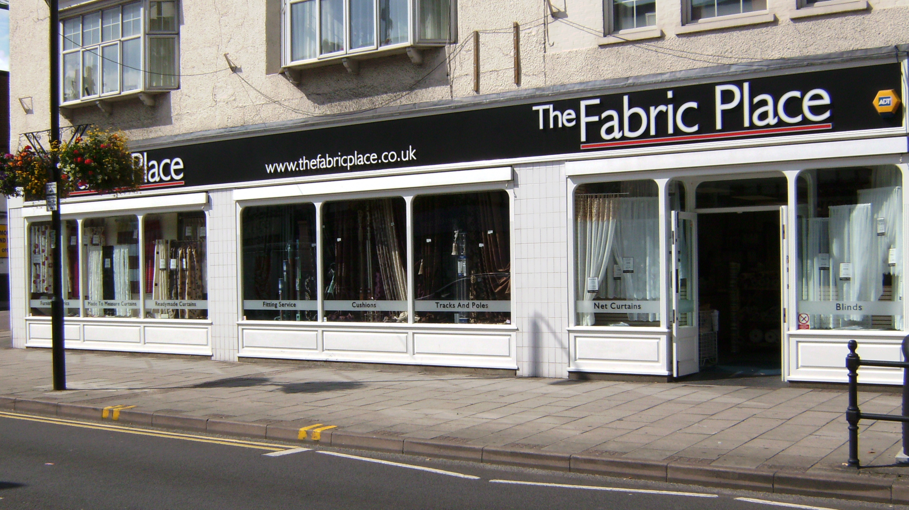
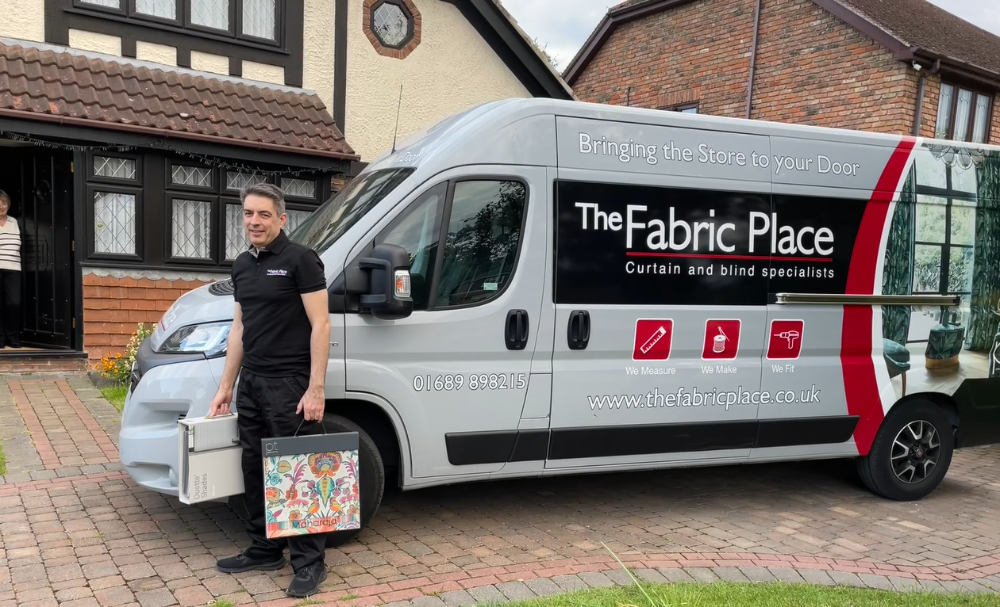

In 2008 we established our first store in Orpington High Street.
-
Robert the proprietor previously worked for a National Retailer, The Fabric Warehouse as Area Operations Manager for many years before taking the decision to set up his own business.
-
Our first store was situated at 286/290 High Street which retailed fabric off the roll, haberdashery, ready made curtains, net curtains, tracks, poles and table PVC.
-
In 2017 we noticed a significant change to our business, the majority of sales were coming from made to measure curtains and blinds which prompted us to take a strategic decision to move our premises across the road.

In 2017 we moved to 267 High Street
-
Here we concentrated on Made to Measure products. Made to Measure has always been a strong part of our Business and it was after the National Pandemic we noticed a further signficant drop in High Street footfall.
-
We were receiving more phone calls and emails requesting us to visit directly without our customers coming to the Store.
-
We therefore took the decision to change the Business into 'Brining the store to your Door' format, where we visit you by appoinment with an extensive range of curtain and blind samples.
-
We have always offered a free non obligatory made to measure consultation, but now instead of choosing samples in store we now bring the Store to your Door.

In 2021 "We Bring The Store To Your Door"
- Welcome to the new style The Fabric Place, we are here to try and make things a little easier for you, when choosing Curtains and Blinds. We start by Bringing the Store to your Door, we have a comprehensive range of fabrics that can be made into Curtains, Roman Blinds and Accessories.
- We also keep an extensive range of Blind samples so whether it is for daytime privacy or to darken a room to help you sleep at night, we believe we have the right blind for you.
- After discussing your window covering options, we will measure your windows and if you have made your selection, we will be able to compile a quotation whilst we are still with you.
- Our general day to day work is Bringing the Store to residential doors, but we also offer a service to commercial buildings whether it is Flame-Retardant Blinds for an Office Building or Flame-Retardant Curtains for a School Hall or Stage Curtains for a Village Hall, we have and can cater for them all.
